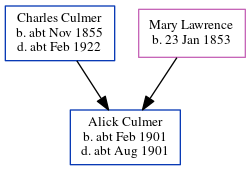

Alick Lawrence Culmer cFeb 1901 - c1901
[ Home ] | [ Calendar ] | [ Surnames Index ] | [ Census Index ] | [ Family History ]The child of Charles Culmer (a coal dealer) and Mary Lawrence, Alick Culmer, the second cousin twice-removed on the mother's side of Nigel Horne, was born in Strood, Kent, England c. Feb 19011,2,3. On Mar 31, 1901, he was living at Cecil Avenue in Strood1.
He died c. Aug 1901 in Strood3.
Parents
- Charles was born c. Nov 1855
- Mary Ann was born on Jan 23, 1853
Citations
- 1901 England, Wales & Scotland Census - Findmypast (was age 0 and the son of the head of the household)
- England & Wales births 1837-2006 - Findmypast
- England & Wales deaths 1837-2007 - Findmypast
Media
England & Wales births 1837-2006 - BMD/B/1901/1/AZ/000140/024
England & Wales deaths 1837-2007 - BMD/D/1901/3/AZ/000085/064
Family Tree
Generated by ged2site. Last updated on Jun 11, 2024